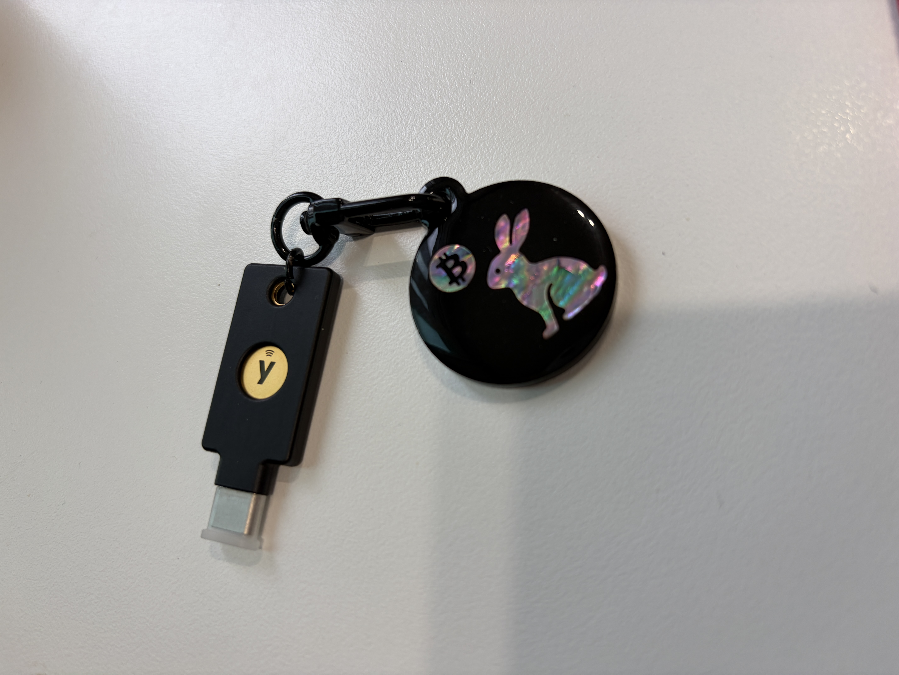

저번 글에서 유비키로 계정 로그인을 넘사벽으로 만드는 법을 얘기했다. 반응이 나쁘지 않아서(라고 나 혼자 생각한다) 조금 더 들어가 보기로 했다. 이번엔 계정이 아니라 '파일'을 잠그고, 한술 더 떠서 '컴퓨터 자체'를 잠가버리는 이야기다.
본격적으로 보안 게이 냄새가 진하게 나는 글이 될 예정이니, 관심 없는 분들은 여기서 뒤로가기를 눌러도 좋다. (그래도 끝까지 읽어주면 고맙고)
1. 보안문서 만들기 — age + age-plugin-yubikey
age라는 암호화 툴이 있다. Go 언어의 TLS 쪽을 만지던 사람이 만든 건데, PGP처럼 무겁고 복잡한 거 다 빼고 "그냥 파일 하나 암호화하고 싶다"는 요구만 딱 채워주는 물건이다. 명령어 한 줄이면 끝난다.
근데 이 age에 유비키를 물릴 수 있는 플러그인이 있다. 이름하야 age-plugin-yubikey. 줄여서 APY. 이게 뭘 해주냐면, 파일을 암호화할 때 '수신자'를 내 유비키로 지정해버리는 거다. 그러면 그 파일은 오직 그 물리적인 유비키를 꽂고, 터치해야만 열린다. 비밀번호가 아니라 진짜 실물 열쇠가 필요한 셈.
맥북에 brew로 필요한 것들을 깔고, 마법사를 실행해서 슬롯 고르고, 이름 붙이고, PIN 설정하고, 터치 정책 정하고 나니 신분증(identity) 파일 하나랑 수신자(recipient) 주소 하나가 생겼다. 수신자 주소는 age1yubikey1... 이렇게 생겼다. 이게 내 유비키의 '공개키' 같은 거라고 보면 된다.
이제 아무 문서나 하나 골라서 이 수신자 주소로 암호화해봤다. 명령어 한 줄이면 끝. .age 확장자가 붙은 파일이 하나 생겼는데, 이건 이제 그냥 알 수 없는 바이너리 덩어리다. 이걸 클라우드에 올리든 이메일로 보내든 상관없다. 유비키 없이는 못 연다.
진짜인지 확인해보려고 바로 복호화 명령어를 쳤다. 엔터를 쳤는데 아무 반응이 없었다. 어? 왜 안 되지? 하고 몇 초를 멀뚱멀뚱 쳐다봤는데, 알고 보니 유비키를 터치해야 했다. 터치 안 하면 그냥 하염없이 기다리는 거였다.
손가락으로 유비키를 톡 건드리니 그제서야 파일이 스르륵 풀렸다. 이 잠깐의 터치 한 번이 세상 어떤 비밀번호보다 강력하다는 게 좀 웃기면서도 든든했다.
용도는 명확하다. 니모닉을 적어둔 메모, 계정 정보 정리한 문서, 유언장 급의 중요한 파일들. 이런 걸 평문으로 클라우드에 굴리는 건 좀 그렇지 않은가. age로 암호화해서 올려두면, 클라우드 업체가 털려도, 내 노트북이 털려도, 결국 마지막 관문은 물리적인 유비키다.
2. 맥OS·리눅스 로그인 잠그기 — 내 손으로 만드는 에어갭 컴퓨터
예전부터 콜드월렛 서명용으로 오래된 노트북 한 대를 완전히 밀어서 에어갭 컴퓨터로 만들어 쓰고 있다. 와이파이/블루투스 모듈을 직접 제거했다. 인터넷이랑 물리적으로 연이 없는 컴퓨터.

근데 곰곰이 생각해보니 구멍이 하나 있었다. 에어갭이라 해킹은 못 당해도, 이 노트북을 통째로 도둑맞으면? 전원 켜고 로그인만 하면 그냥 다 열리는 거 아닌가. 인터넷이 없어서 안전하다는 거지, 물리적 도난에는 그냥 속수무책이었던 거다.
그래서 로그인 자체를 유비키로 잠가버리기로 했다.
맥OS 쪽은 Yubico에서 배포하는 PAM 모듈을 설치하고, YubiKey Manager에서 OTP 슬롯 하나를 챌린지-리스폰스 모드로 설정한 다음, PAM 설정 파일에 딱 한 줄을 추가하는 방식이었다. 이 한 줄 덕분에, 유비키가 꽂혀있지 않으면 비밀번호를 맞게 쳐도 로그인이 안 된다.
리눅스 쪽은 좀 더 깔끔했다. pam_u2f라는 모듈로 먼저 내 유비키를 등록하고, PAM 설정에 한 줄만 추가하면 끝나는 구조였다.
말은 쉽게 썼지만 사실 이 작업, 심장이 좀 쫄깃하다. PAM 설정을 잘못 건드리면 최악의 경우 나 자신이 내 컴퓨터에서 영영 로그아웃 당하는 사태가 벌어질 수 있다. 그래서 터미널 세션 하나를 따로 열어둔 채로 (혹시 몰라서) 새 설정을 테스트했다. 이게 국룰이라고 한다.
화면을 잠그고, 유비키를 뽑고, 로그인을 시도한다 → 안 되는 걸 확인한다 → 유비키를 다시 꽂는다 → 된다.
이 사이클을 몇 번 반복하면서 혼자 실실 웃었다. 내가 만든 컴퓨터인데 내가 못 들어가는 걸 확인하는 게 이렇게 뿌듯할 일인가 싶었지만, 뿌듯했다.
결과적으로 이 노트북은 이제 3중으로 잠겨있다. 인터넷이 안 되는 에어갭, 니모닉 없이는 못 여는 콜드월렛, 그리고 유비키 없이는 로그인조차 안 되는 OS. 콜드월렛이 유비키로 잠기는 셈이다. 도둑이 이 노트북을 훔쳐가봐야 그냥 벽돌 하나 들고 가는 것과 다를 바 없다.
물론 유비키를 잃어버리면 나도 못 들어간다는 뜻이라, 백업 유비키는 반드시 별도로 안전한 곳에 보관해두시길. 강력한 보안은 항상 '나 자신도 못 들어갈 위험'과 세트로 온다는 걸 다시 한번 느낀다.
여기서 반전. 콜드월렛조차도 지워버렸다. 다크스키피(Dark Skippy) 공격이 떠오르더라고. 마이크와 스피커는 막아버렸지만, 카메라까지 없애버리니 문서 하나 옮기는 것도 못 할 짓이라 카메라는 입력용으로 살려뒀다.
이제 이 보안 노트북은 키보드와 카메라로만 입력하고, 화면으로만 출력한다.
휴.
이제 마음이 놓였어.